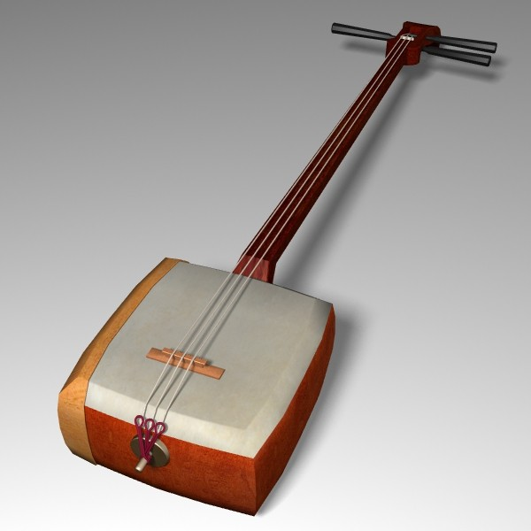

Шамисен
Шамисен — это традиционный японский струнный инструмент, который привлекает внимание своим особенным звучанием и уникальным дизайном. Этот многовековой инструмент является важной частью японской музыкальной культуры, обладая глубокими корнями и богатой историей.
Шамисен обычно используется в различных жанрах японской музыки, таких как кабуки и гэза, а также в народной музыке. Своим узнаваемым звучанием и выразительностью шамисен способен передавать широкий диапазон эмоций, от меланхолии до энергии и веселья.
Инструмент имеет уникальную конструкцию, состоящую из трех струн, натянутых над длинный, тонкий корпус. Струны обычно изготавливаются из шелка или нейлона и настраиваются с помощью специальных механизмов на боковой поверхности корпуса. Для игры на шамисене обычно используются пальцы или деревянный медиатор.
Шамисен не только является важным элементом традиционной музыки, но и находит применение в современных жанрах и экспериментальной музыке. Его удивительная способность передавать японскую культуру через музыку делает шамисен уникальным и уважаемым инструментом как в Японии, так и во всем мире.